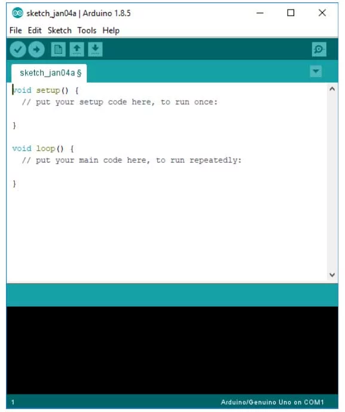

The Arduino Integrated Development Environment - or Arduino Software (IDE) - contains a text editor for writing code, a message area, a text console, a toolbar with buttons for common functions and a series of menus. It connects to the Arduino and Genuino hardware to upload programs and communicate with them.
Writing Sketches
Programs written using Arduino Software (IDE) are called sketches. These sketches are written in the text editor and are saved with the file extension .ino. The editor has features for cutting/pasting and for searching/replacing text. The message area gives feedback while saving and exporting and also displays errors. The console displays text output by the Arduino Software (IDE), including complete error messages and other information. The bottom righthand corner of the window displays the configured board and serial port. The toolbar buttons allow you to verify and upload programs, create, open, and save sketches, and open the serial monitor.

Verify:
Checks your code for errors compiling it.
Upload:
Compiles your code and uploads it to the configured board. See uploading below for details.
Note: If you are using an external programmer with your board, you can hold down the "shift" key on your computer when using this icon. The text will change to "Upload using Programmer"
New:
Creates a new sketch.
Open:
Presents a menu of all the sketches in your sketchbook. Clicking one will open it within the current window overwriting its content.
Note: due to a bug in Java, this menu doesn't scroll; if you need to open a sketch late in the list, use the File | Sketchbook menu instead.
Save:
Saves your sketch.
Serial Monitor:
Opens the serial monitor.
Additional commands are found within the five menus: File, Edit, Sketch, Tools, Help. The menus are context sensitive, which means only those items relevant to the work currently being carried out are available.
More information can be found at:
https://www.arduino.cc/en/Guide/Environment